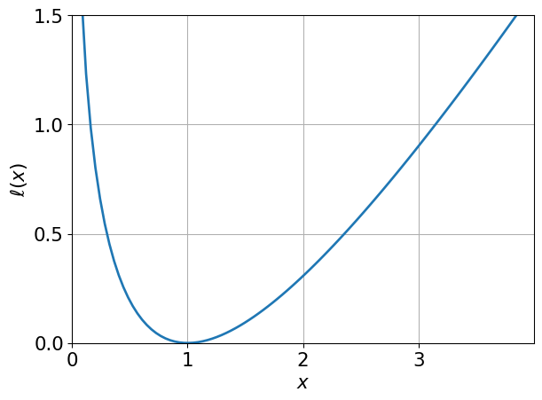
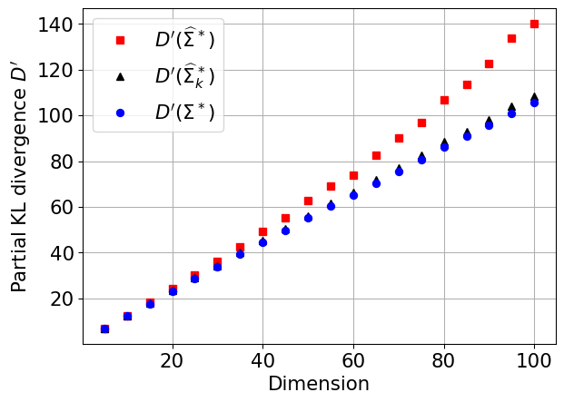
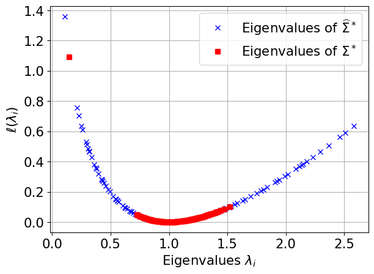
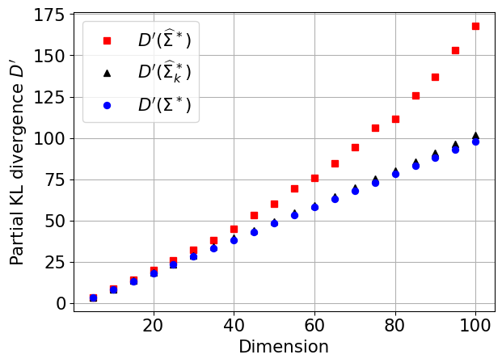
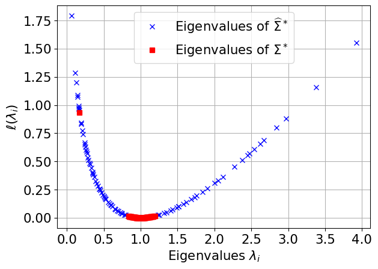

Importance sampling, High dimension, Gaussian covariance matrix, Kullback-Leibler divergence, Projection
Status
draft
Abstract
In this paper we propose a dimension-reduction strategy in order to improve the performance of importance sampling in high dimension. The idea is to estimate variance terms in a small number of suitably chosen directions. We first prove that the optimal directions, i.e., the ones that minimize the Kullback–Leibler divergence with the optimal auxiliary density, are the eigenvectors associated to extreme (small or large) eigenvalues of the optimal covariance matrix. We then perform extensive numerical experiments that show that as dimension increases, these directions give estimations which are very close to optimal. Moreover, we show that the estimation remains accurate even when a simple empirical estimator of the covariance matrix is used to estimate these directions. These theoretical and numerical results open the way for different generalizations, in particular the incorporation of such ideas in adaptive importance sampling schemes.
Hide/Show the code
######################################################################## Figure 1. Plot of the function "l"#######################################################################import numpy as npimport scipy as spimport scipy.statsimport matplotlib.pyplot as pltfrom CEIS_vMFNM import*from IPython.display import display, Math, Latexfrom IPython.display import Markdownfrom tabulate import tabulatenp.random.seed(10)x = np.linspace(np.finfo(float).eps,4.0,100)y =-np.log(x) + x -1# plotfig, ax = plt.subplots()ax.plot(x, y, linewidth=2.0)ax.set(xlim=(0, 4), xticks=[0,1,2,3], ylim=(0, 0.5), yticks=[0,0.5,1,1.5])plt.grid()plt.xlabel(r"$x$",fontsize=16)plt.ylabel(r"$\ell(x)$",fontsize=16)for tickLabel in plt.gca().get_xticklabels() + plt.gca().get_yticklabels(): tickLabel.set_fontsize(16)plt.show()

Figure 1: Plot of the function \ell=-\log(x) + x - 1 given by ?@eq-l
Hide/Show the code
############################################################################ Figure 5. Evolution of the partial KL divergence and spectrum of the # eigenvalues for the large portfolio loss application###########################################################################def Portfolio(X): N=np.shape(X)[0] nn=np.shape(X)[1] n=nn-2 lamb=np.array(sp.stats.gamma.ppf(sp.stats.norm.cdf(X[:,0]),6,scale=1/6)\ ,ndmin=2).T eta=3*X[:,2:] ZZ=np.array(X[:,1],ndmin=2).T XX=(1/4*ZZ+np.sqrt(1-1/4**2)*eta)/np.sqrt(lamb) IndX=(XX>0.5*np.sqrt(n))*1 PF=np.sum(IndX,axis=1)return(PF-0.25*n-0.1)def Portfolio_md(X): N=np.shape(X)[0] nn=np.shape(X)[1] n=nn-2 lamb=np.array( sp.stats.gamma.ppf(sp.stats.norm.cdf(X[:,0]),6,scale=1/6)\ ,ndmin=2).T eta=3*X[:,2:] ZZ=np.array(X[:,1],ndmin=2).T XX=(1/4*ZZ+np.sqrt(1-1/4**2)*eta)/np.sqrt(lamb) IndX=(XX>0.5*np.sqrt(n))*1 PF=np.sum(IndX,axis=1)return(PF-0.3*n-0.1)def Portfolio_ld(X): N=np.shape(X)[0] nn=np.shape(X)[1] n=nn-2 lamb=np.array(sp.stats.gamma.ppf(sp.stats.norm.cdf(X[:,0]),6,scale=1/6)\ ,ndmin=2).T eta=3*X[:,2:] ZZ=np.array(X[:,1],ndmin=2).T XX=(1/4*ZZ+np.sqrt(1-1/4**2)*eta)/np.sqrt(lamb) IndX=(XX>0.5*np.sqrt(n))*1 PF=np.sum(IndX,axis=1)return(PF-0.45*n-0.1)DKL=np.zeros(20)DKLp=np.zeros(20)DKLm=np.zeros(20)DKLstar=np.zeros(20)n=100bigsample=20*10**5M=300for d inrange(5,n+1,5):if d<=30: phi=Portfolio_ldif d>70: phi=Portfolioelse: phi=Portfolio_md VA=sp.stats.multivariate_normal(mean=np.zeros(d+2),cov=np.eye(d+2)) X01=VA.rvs(size=bigsample) ind1=(phi(X01)>0) X1=X01[ind1,:] X1=X1[:M*10,:]#Mstar Mstar=np.mean(X1.T,axis=1) #Sigmastar X1c=(X1-Mstar).T Sigstar=X1c.dot(X1c.T)/np.shape(X1c)[1] ## g*-sample VA0=sp.stats.multivariate_normal(mean=np.zeros(d+2),cov=np.eye(d+2)) X0=VA0.rvs(size=M*1000) ind=(phi(X0)>0) X=X0[ind,:] X=X[:M,:] # g*-sample of size M## estimated mean and covariance mm=np.mean(X,axis=0) Xc=(X-mm).T sigma =Xc @ Xc.T/np.shape(Xc)[1]## projection with the eigenvalues of sigma Eig=np.linalg.eigh(sigma) logeig=np.sort(np.log(Eig[0])-Eig[0]) delta=np.zeros(len(logeig)-1)for j inrange(len(logeig)-1): delta[j]=abs(logeig[j]-logeig[j+1]) k=np.argmax(delta)+1# biggest gap between the l(lambda_i) indi=[]for l inrange(k): indi.append(np.where(np.log(Eig[0])-Eig[0]==logeig[l])[0][0]) P1=np.array(Eig[1][:,indi[0]],ndmin=2).T # projection matrixfor l inrange(1,k): P1=np.concatenate((P1,np.array(Eig[1][:,indi[l]],ndmin=2).T),axis=1) diagsi=np.diag(Eig[0][indi]) sig_opt_d=P1.dot((diagsi-np.eye(k))).dot(P1.T)+np.eye(d+2) DKL[int((d-5)/5)]=np.log(np.linalg.det(sigma))+np.sum(np.diag(\ Sigstar.dot(np.linalg.inv(sigma)))) DKLp[int((d-5)/5)]=np.log(np.linalg.det(sig_opt_d))+np.sum(np.diag(\ Sigstar.dot(np.linalg.inv(sig_opt_d)))) DKLstar[int((d-5)/5)]=np.log(np.linalg.det(Sigstar))+d+2#### plot of partial KL divergenceplt.plot(range(5,n+1,5),DKL,'rs',label=r"$D'(\widehat{\Sigma}^*)$")plt.plot(range(5,n+1,5),DKLp,'k^',label=r"$D'(\widehat{\Sigma}^*_k)$")plt.plot(range(5,n+1,5),DKLstar,'bo',label=r"$D'(\Sigma^*)$")plt.grid()plt.xlabel('Dimension',fontsize=16)plt.ylabel(r"Partial KL divergence $D'$",fontsize=16)plt.legend(fontsize=16)for tickLabel in plt.gca().get_xticklabels() + plt.gca().get_yticklabels(): tickLabel.set_fontsize(16)plt.show()#### plot of the eigenvaluesEig1=np.linalg.eigh(sigma)logeig1=np.log(Eig1[0])-Eig1[0]+1Table_eigv=np.zeros((n+2,2))Table_eigv[:,0]=Eig1[0]Table_eigv[:,1]=-logeig1Eigst=np.linalg.eigh(Sigstar)logeigst=np.log(Eigst[0])-Eigst[0]+1Table_eigv_st=np.zeros((n+2,2))Table_eigv_st[:,0]=Eigst[0]Table_eigv_st[:,1]=-logeigstplt.grid()plt.xlabel(r"Eigenvalues $\lambda_i$",fontsize=16)plt.ylabel(r"$\ell(\lambda_i)$",fontsize=16)for tickLabel in plt.gca().get_xticklabels() + plt.gca().get_yticklabels(): tickLabel.set_fontsize(16)plt.plot(Table_eigv[:,0],Table_eigv[:,1],'bx',\ label=r"Eigenvalues of $\widehat{\Sigma}^*$")plt.plot(Table_eigv_st[:,0],Table_eigv_st[:,1],'rs',\ label=r"Eigenvalues of $\Sigma^*$")plt.legend(fontsize=16)plt.show()

(a) Evolution of the partial KL divergence as the dimension increases, with the optimal covariance matrix \Sigma^* (blue circles), the sample covariance \widehat{\Sigma}^* (red squares), and the projected covariance \widehat{\Sigma}^*_k (black triangles).

(b) Computation of \ell(\lambda_i) for the eigenvalues of \Sigma^* (red squares) and \widehat{\Sigma}^* (blue crosses) in dimension n = 100 for the large portfolio losses of ?@eq-portfolio.
Figure 2: Partial KL divergence and spectrum for the function \phi = \mathbb{I}_{\varphi \geq 0} with \varphi the function given by ?@eq-portfolio.
Hide/Show the code
############################################################################## Table 5. Numerical comparison on the large portfolio loss application#############################################################################n=100# dimensionphi=PortfolioE=1.82*10**(-3)def mypi(X): nn=np.shape(X)[1] n=nn-2 f0=sp.stats.multivariate_normal.pdf(X,mean=np.zeros(nn),cov=np.eye(nn))return((phi(X)>0)*f0)N=2000M=500B=2# number of runsEopt=np.zeros(B)EIS=np.zeros(B)Eprj=np.zeros(B)Eprm=np.zeros(B)Eprjst=np.zeros(B)Eprmst=np.zeros(B)Evmfn=np.zeros(B)SI=[]SIP=[]SIPst=[]SIM=[]SIMst=[]bigsample=1*10**6VA=sp.stats.multivariate_normal(mean=np.zeros(n+2),cov=np.eye(n+2))X01=VA.rvs(size=bigsample) ind1=(phi(X01)>0)X1=X01[ind1,:] #MstarMstar=np.mean(X1.T,axis=1) #SigmastarX1c=(X1-Mstar).TSigstar=X1c.dot(X1c.T)/np.shape(X1c)[1] Eigst=np.linalg.eigh(Sigstar) logeigst=np.sort(np.log(Eigst[0])-Eigst[0]) deltast=np.zeros(len(logeigst)-1)for i inrange(len(logeigst)-1): deltast[i]=abs(logeigst[i]-logeigst[i+1]) ## choice of the number of dimensionk_st=np.argmax(deltast)+1indist=[]for i inrange(k_st): indist.append(np.where(np.log(Eigst[0])-Eigst[0]==logeigst[i])[0][0]) P1st=np.array(Eigst[1][:,indist[0]],ndmin=2).T for i inrange(1,k_st):# matrix of influential directions P1st=np.concatenate((P1st,np.array(Eigst[1][:,indist[i]],ndmin=2).T),\ axis=1) #np.random.seed(0)for i inrange(B):############################# Estimation of the matrices## g*-sample of size M VA=sp.stats.multivariate_normal(np.zeros(n+2),np.eye(n+2)) X0=VA.rvs(size=M*1000) ind=(phi(X0)>0) X=X0[ind,:] X=X[:M,:] R=np.sqrt(np.sum(X**2,axis=1)) Xu=(X.T/R).T ## estimated gaussian mean and covariance mm=np.mean(X,axis=0) Xc=(X-mm).T sigma =Xc @ Xc.T/np.shape(Xc)[1] SI.append(sigma)## von Mises Fisher parameters normu=np.sqrt(np.mean(Xu,axis=0).dot(np.mean(Xu,axis=0).T)) mu=np.mean(Xu,axis=0)/normu mu=np.array(mu,ndmin=2) chi=min(normu,0.95) kappa=(chi*n-chi**3)/(1-chi**2)## Nakagami parameters omega=np.mean(R**2) tau4=np.mean(R**4) pp=omega**2/(tau4-omega**2)### Eig=np.linalg.eigh(sigma) logeig=np.sort(np.log(Eig[0])-Eig[0]) delta=np.zeros(len(logeig)-1)for j inrange(len(logeig)-1): delta[j]=abs(logeig[j]-logeig[j+1]) k=np.argmax(delta)+1 indi=[]for l inrange(k): indi.append(np.where(np.log(Eig[0])-Eig[0]==logeig[l])[0][0]) P1=np.array(Eig[1][:,indi[0]],ndmin=2).Tfor l inrange(1,k): P1=np.concatenate((P1,np.array(Eig[1][:,indi[l]],ndmin=2).T),axis=1) diagsi=np.diag(Eig[0][indi]) sig_opt_d=P1.dot((diagsi-np.eye(k))).dot(P1.T)+np.eye(n+2) SIP.append(sig_opt_d)### diagsist=P1st.T.dot(sigma).dot(P1st) sig_opt=P1st.dot(diagsist-np.eye(k_st)).dot(P1st.T)+np.eye(n+2) SIPst.append(sig_opt)### Norm_mm=np.linalg.norm(mm) normalised_mm=np.array(mm,ndmin=2).T/Norm_mm vhat=normalised_mm.T.dot(sigma).dot(normalised_mm) sig_mean_d=(vhat-1)*normalised_mm.dot(normalised_mm.T)+np.eye(n+2) SIM.append(sig_mean_d)### Norm_Mstar=np.linalg.norm(Mstar) normalised_Mstar=np.array(Mstar,ndmin=2).T/Norm_Mstar vhatst=normalised_Mstar.T.dot(sigma).dot(normalised_Mstar) sig_mean=(vhatst-1)*normalised_Mstar.dot(normalised_Mstar.T)+np.eye(n+2) SIMst.append(sig_mean)############################################# Estimation of the integral### Xop=sp.stats.multivariate_normal.rvs(mean=mm, cov=Sigstar,size=N) wop=mypi(Xop)/sp.stats.multivariate_normal.pdf(Xop,mean=mm, cov=Sigstar) Eopt[i]=np.mean(wop) ### Xis=sp.stats.multivariate_normal.rvs(mean=mm, cov=sigma,size=N) wis=mypi(Xis)/sp.stats.multivariate_normal.pdf(Xis,mean=mm, cov=sigma) EIS[i]=np.mean(wis)### Xpr=sp.stats.multivariate_normal.rvs(mean=mm, cov=sig_opt_d,size=N) wpr=mypi(Xpr)/sp.stats.multivariate_normal.pdf(Xpr,mean=mm, \ cov=sig_opt_d) Eprj[i]=np.mean(wpr)### Xpm=sp.stats.multivariate_normal.rvs(mean=mm, cov=sig_mean_d,size=N) wpm=mypi(Xpm)/sp.stats.multivariate_normal.pdf(Xpm,mean=mm, \ cov=sig_mean_d) Eprm[i]=np.mean(wpm)### Xprst=sp.stats.multivariate_normal.rvs(mean=mm, cov=sig_opt,size=N) wprst=mypi(Xprst)/sp.stats.multivariate_normal.pdf(Xprst,mean=mm, \ cov=sig_opt) Eprjst[i]=np.mean(wprst)### Xpmst=sp.stats.multivariate_normal.rvs(mean=mm, cov=sig_mean,size=N) wpmst=mypi(Xpmst)/sp.stats.multivariate_normal.pdf(Xpmst,mean=mm, \ cov=sig_mean) Eprmst[i]=np.mean(wpmst)### Xvmfn = vMFNM_sample(mu, kappa, omega, pp, 1, N) Rvn=np.sqrt(np.sum(Xvmfn**2,axis=1)) Xvnu=Xvmfn.T/Rvn h_log=vMF_logpdf(Xvnu,mu.T,kappa)+nakagami_logpdf(Rvn,pp,omega) A = np.log(n+2) + np.log(np.pi ** ((n+2) /2)) - sp.special.gammaln((n+2) /2+1) f_u =-A f_chi = (np.log(2) * (1- (n+2) /2) + np.log(Rvn) * ((n+2) -1)\-0.5* Rvn **2- sp.special.gammaln((n+2) /2)) f_log = f_u + f_chi W_log = f_log - h_log wvmfn=(phi(Xvmfn)>0)*np.exp(W_log) Evmfn[i]=np.mean(wvmfn)### KL divergences dkli=np.zeros(B)dklp=np.zeros(B)dklm=np.zeros(B)dklpst=np.zeros(B)dklmst=np.zeros(B)dklpca=np.zeros(B)for i inrange(B): dkli[i]=np.log(np.linalg.det(SI[i]))+sum(np.diag(\ Sigstar.dot(np.linalg.inv(SI[i])))) dklp[i]=np.log(np.linalg.det(SIP[i]))+sum(np.diag(\ Sigstar.dot(np.linalg.inv(SIP[i])))) dklm[i]=np.log(np.linalg.det(SIM[i]))+sum(np.diag(\ Sigstar.dot(np.linalg.inv(SIM[i])))) dklpst[i]=np.log(np.linalg.det(SIPst[i]))+sum(np.diag(\ Sigstar.dot(np.linalg.inv(SIPst[i])))) dklmst[i]=np.log(np.linalg.det(SIMst[i]))+sum(np.diag(\ Sigstar.dot(np.linalg.inv(SIMst[i]))))Tabresult=np.zeros((3,7)) # table of resultsTabresult[0,0]=np.log(np.linalg.det(Sigstar))+n+2Tabresult[0,1]=np.mean(dkli)Tabresult[0,2]=np.mean(dklpst)Tabresult[0,3]=np.mean(dklmst)Tabresult[0,4]=np.mean(dklp)Tabresult[0,5]=np.mean(dklm)Tabresult[0,6]=NoneTabresult[1,0]=np.mean(Eopt-E)/E*100Tabresult[1,1]=np.mean(EIS-E)/E*100Tabresult[1,2]=np.mean(Eprjst-E)/E*100Tabresult[1,3]=np.mean(Eprmst-E)/E*100Tabresult[1,4]=np.mean(Eprj-E)/E*100Tabresult[1,5]=np.mean(Eprm-E)/E*100Tabresult[1,6]=np.mean(Evmfn-E)/E*100Tabresult[2,0]=np.sqrt(np.mean((Eopt-E)**2))/E*100Tabresult[2,1]=np.sqrt(np.mean((EIS-E)**2))/E*100Tabresult[2,2]=np.sqrt(np.mean((Eprjst-E)**2))/E*100Tabresult[2,3]=np.sqrt(np.mean((Eprmst-E)**2))/E*100Tabresult[2,4]=np.sqrt(np.mean((Eprj-E)**2))/E*100Tabresult[2,5]=np.sqrt(np.mean((Eprm-E)**2))/E*100Tabresult[2,6]=np.sqrt(np.mean((Evmfn-E)**2))/E*100Tabresult=np.round(Tabresult,1)table=[["D'",Tabresult[0,0],Tabresult[0,1],Tabresult[0,2],Tabresult[0,3], Tabresult[0,4],Tabresult[0,5],Tabresult[0,6]], ["Relative error (\%)",Tabresult[1,0],Tabresult[1,1],Tabresult[1,2], Tabresult[1,3],Tabresult[1,4],Tabresult[1,5],Tabresult[1,6]], ["Coefficient of variation (\%)",Tabresult[2,0],Tabresult[2,1], Tabresult[2,2],Tabresult[2,3],Tabresult[2,4],Tabresult[2,5], Tabresult[2,6]]]Markdown(tabulate( table, headers=["","$\Sigma^*$", "$\widehat{\Sigma}^*$", "$\widehat{\Sigma}_{opt}$", \"$\widehat{\Sigma}_{mean}$", "${\widehat{\Sigma}^{+d}_{opt}}$",\"$\widehat{\Sigma}^{+d}_{mean}$", "vMFN"], tablefmt="pipe"))
Table 1: Numerical comparison of the estimation of E \approx 1.82 \cdot 10^{-3} considering the Gaussian density with the six covariance matrices defined in ?@sec-def_cov and the vFMN model,\phi = \mathbb{I}_{{\varphi \geq 0}} with \varphi given by ?@eq-portfolio.
\Sigma^*
\widehat{\Sigma}^*
\widehat{\Sigma}_{opt}
\widehat{\Sigma}_{mean}
{\widehat{\Sigma}^{+d}_{opt}}
\widehat{\Sigma}^{+d}_{mean}
vMFN
D’
104.3
122.4
107.5
107.6
108
107.7
nan
Relative error (%)
12.2
-61.9
1.5
-3.2
-3.9
-9.3
-5.1
Coefficient of variation (%)
14.4
63
3.6
3.5
6.3
9.4
7.4
Hide/Show the code
########################################################################### Figure 6. Evolution of the partial KL divergence and spectrum of the # eigenvalues for the asian payoff application##########################################################################def payoff(X): d=np.shape(X)[1] S0=50 r=0.05 T=0.5 sig2=0.01 K=55 uk=(r-sig2/2)*T/d+np.sqrt(T*sig2/d)*X cumuk=np.cumsum(uk,axis=1) en=S0*np.exp(cumuk) FK=np.exp(-r*T)*(1/d*np.sum(en,axis=1)-K)return(FK*(FK>0))DKL=np.zeros(20)DKLp=np.zeros(20)DKLm=np.zeros(20)DKLstar=np.zeros(20)n=100M=300bigsample=10*10**5phi=payofffor d inrange(5,n+1,5): VA=sp.stats.multivariate_normal(mean=np.zeros(d),cov=np.eye(d)) X1=VA.rvs(size=bigsample) W1=phi(X1) W=W1[(W1>0)] X=X1[(W1>0),:]# W=W[:10*M]# X=X[:10*M,:]## Mstar Mstar = np.divide((W.T @ X), sum(W)) ## Sigmastar Xc = np.multiply((X - Mstar).T, np.sqrt(W)) Sigstar = np.divide((Xc @ Xc.T), sum(W)) ## VA0=sp.stats.multivariate_normal(np.zeros(d),np.eye(d)) X0=VA0.rvs(size=M*100) W0=phi(X0) Wf=W0[(W0>0)] Xf=X0[(W0>0),:] Wf=Wf[:M] Xf=Xf[:M,:]## estimated mean and covariance mm=np.divide((Wf.T @ Xf), sum(Wf)) Xcf=np.multiply((Xf - mm).T, np.sqrt(Wf)) sigma =np.divide((Xcf @ Xcf.T), sum(Wf)) ## projection with the eigenvalues of sigma Eig=np.linalg.eigh(sigma) logeig=np.sort(np.log(Eig[0])-Eig[0]) delta=np.zeros(len(logeig)-1)for j inrange(len(logeig)-1): delta[j]=abs(logeig[j]-logeig[j+1]) k=np.argmax(delta)+1# biggest gap between the l(lambda_i) indi=[]for l inrange(k): indi.append(np.where(np.log(Eig[0])-Eig[0]==logeig[l])[0][0]) P1=np.array(Eig[1][:,indi[0]],ndmin=2).T # projection matrixfor l inrange(1,k): P1=np.concatenate((P1,np.array(Eig[1][:,indi[l]],ndmin=2).T),axis=1) diagsi=np.diag(Eig[0][indi]) sig_opt_d=P1.dot((diagsi-np.eye(k))).dot(P1.T)+np.eye(d) DKL[int((d-5)/5)]=np.log(np.linalg.det(sigma))+np.sum(\ np.diag(Sigstar.dot(np.linalg.inv(sigma)))) DKLp[int((d-5)/5)]=np.log(np.linalg.det(sig_opt_d))+np.sum(\ np.diag(Sigstar.dot(np.linalg.inv(sig_opt_d)))) DKLstar[int((d-5)/5)]=np.log(np.linalg.det(Sigstar))+d#### plot of partial KL divergenceplt.plot(range(5,n+1,5),DKL,'rs',label=r"$D'(\widehat{\Sigma}^*)$")plt.plot(range(5,n+1,5),DKLp,'k^',label=r"$D'(\widehat{\Sigma}^*_k)$")plt.plot(range(5,n+1,5),DKLstar,'bo',label=r"$D'(\Sigma^*)$")plt.grid()plt.xlabel('Dimension',fontsize=16)plt.ylabel(r"Partial KL divergence $D'$",fontsize=16)plt.legend(fontsize=16)for tickLabel in plt.gca().get_xticklabels() + plt.gca().get_yticklabels(): tickLabel.set_fontsize(16)plt.show()#### plot of the eigenvaluesEig1=np.linalg.eigh(sigma)logeig1=np.log(Eig1[0])-Eig1[0]+1Table_eigv=np.zeros((n,2))Table_eigv[:,0]=Eig1[0]Table_eigv[:,1]=-logeig1Eigst=np.linalg.eigh(Sigstar)logeigst=np.log(Eigst[0])-Eigst[0]+1Table_eigv_st=np.zeros((n,2))Table_eigv_st[:,0]=Eigst[0]Table_eigv_st[:,1]=-logeigstplt.grid()plt.xlabel(r"Eigenvalues $\lambda_i$",fontsize=16)plt.ylabel(r"$\ell(\lambda_i)$",fontsize=16)for tickLabel in plt.gca().get_xticklabels() + plt.gca().get_yticklabels(): tickLabel.set_fontsize(16)plt.plot(Table_eigv[:,0],Table_eigv[:,1],'bx',\ label=r"Eigenvalues of $\widehat{\Sigma}^*$")plt.plot(Table_eigv_st[:,0],Table_eigv_st[:,1],'rs',\ label=r"Eigenvalues of $\Sigma^*$")plt.legend(fontsize=16)plt.show()

(a) Evolution of the partial KL divergence as the dimension increases, with the optimal covariance matrix \Sigma^* (blue circles), the sample covariance \widehat{\Sigma}^* (red squares), and the projected covariance \widehat{\Sigma}^*_k (black triangles).

(b) Computation of \ell(\lambda_i) for the eigenvalues of \Sigma^* (red squares) and \widehat{\Sigma}^* (blue crosses) in dimension n = 100 for the Asian payoff example of ?@eq-payoff
Figure 3: Partial KL divergence and spectrum for the function \phi given in ?@eq-payoff.
Table 2: Numerical comparison of the estimation of E \approx 18.7 \times 10^{-3} considering the Gaussian density with the six covariance matrices defined in ?@sec-def_cov and the vFMN model, when \phi is given by ?@eq-payoff.
---title: Optimal projection for parametric importance sampling in high dimensionauthor: - name: Maxime El Masri affiliation: '[ONERA/DTIS](https://www.onera.fr/), [ISAE-SUPAERO](https://www.isae-supaero.fr/), [Université de Toulouse](https://www.univ-toulouse.fr/)' orcid: 0000-0002-9127-4503 - name: Jérôme Morio url: 'https://www.onera.fr/en/staff/jerome-morio?destination=node/981' affiliation: '[ONERA/DTIS](https://www.onera.fr/), [Université de Toulouse](https://www.univ-toulouse.fr/)' orcid: 0000-0002-8811-8956 - name: Florian Simatos url: 'https://pagespro.isae-supaero.fr/florian-simatos/' affiliation: '[ISAE-SUPAERO](https://www.isae-supaero.fr/), [Université de Toulouse](https://www.univ-toulouse.fr/)'date: last-modifieddescription: | This document provides a dimension-reduction strategy in order to improve the performance of importance sampling in high dimension.abstract: | In this paper we propose a dimension-reduction strategy in order to improve the performance of importance sampling in high dimension. The idea is to estimate variance terms in a small number of suitably chosen directions. We first prove that the optimal directions, i.e., the ones that minimize the Kullback--Leibler divergence with the optimal auxiliary density, are the eigenvectors associated to extreme (small or large) eigenvalues of the optimal covariance matrix. We then perform extensive numerical experiments that show that as dimension increases, these directions give estimations which are very close to optimal. Moreover, we show that the estimation remains accurate even when a simple empirical estimator of the covariance matrix is used to estimate these directions. These theoretical and numerical results open the way for different generalizations, in particular the incorporation of such ideas in adaptive importance sampling schemes.keywords: - Importance sampling - High dimension - Gaussian covariance matrix - Kullback-Leibler divergence - Projectionbibliography: references.bibgithub-user: jmorio44repo: optimal-projection-ISdraft: truepublished: falseformat: computo-html: default computo-pdf: defaultexecute: keep-ipynb: truejupyter: jupytext: text_representation: extension: .qmd format_name: quarto format_version: '1.0' jupytext_version: 1.14.2 kernelspec: display_name: Python 3 (ipykernel) language: python name: python3---```{python}#| label: fig-l#| fig-cap: Plot of the function $\ell=-\log(x) + x - 1$ given by @eq-l######################################################################## Figure 1. Plot of the function "l"#######################################################################import numpy as npimport scipy as spimport scipy.statsimport matplotlib.pyplot as pltfrom CEIS_vMFNM import*from IPython.display import display, Math, Latexfrom IPython.display import Markdownfrom tabulate import tabulatenp.random.seed(10)x = np.linspace(np.finfo(float).eps,4.0,100)y =-np.log(x) + x -1# plotfig, ax = plt.subplots()ax.plot(x, y, linewidth=2.0)ax.set(xlim=(0, 4), xticks=[0,1,2,3], ylim=(0, 0.5), yticks=[0,0.5,1,1.5])plt.grid()plt.xlabel(r"$x$",fontsize=16)plt.ylabel(r"$\ell(x)$",fontsize=16)for tickLabel in plt.gca().get_xticklabels() + plt.gca().get_yticklabels(): tickLabel.set_fontsize(16)plt.show()``````{python}#| label: fig-inefficiency-portfolio#| fig-cap: 'Partial KL divergence and spectrum for the function $\phi = \mathbb{I}_{\varphi \geq 0}$ with $\varphi$ the function given by @eq-portfolio.'#| fig-subcap:#| - 'Evolution of the partial KL divergence as the dimension increases, with the optimal covariance matrix $\Sigma^*$ (blue circles), the sample covariance $\widehat{\Sigma}^*$ (red squares), and the projected covariance $\widehat{\Sigma}^*_k$ (black triangles).'#| - 'Computation of $\ell(\lambda_i)$ for the eigenvalues of $\Sigma^*$ (red squares) and $\widehat{\Sigma}^*$ (blue crosses) in dimension $n = 100$ for the large portfolio losses of @eq-portfolio.'#| layout-ncol: 2############################################################################ Figure 5. Evolution of the partial KL divergence and spectrum of the # eigenvalues for the large portfolio loss application###########################################################################def Portfolio(X): N=np.shape(X)[0] nn=np.shape(X)[1] n=nn-2 lamb=np.array(sp.stats.gamma.ppf(sp.stats.norm.cdf(X[:,0]),6,scale=1/6)\ ,ndmin=2).T eta=3*X[:,2:] ZZ=np.array(X[:,1],ndmin=2).T XX=(1/4*ZZ+np.sqrt(1-1/4**2)*eta)/np.sqrt(lamb) IndX=(XX>0.5*np.sqrt(n))*1 PF=np.sum(IndX,axis=1)return(PF-0.25*n-0.1)def Portfolio_md(X): N=np.shape(X)[0] nn=np.shape(X)[1] n=nn-2 lamb=np.array( sp.stats.gamma.ppf(sp.stats.norm.cdf(X[:,0]),6,scale=1/6)\ ,ndmin=2).T eta=3*X[:,2:] ZZ=np.array(X[:,1],ndmin=2).T XX=(1/4*ZZ+np.sqrt(1-1/4**2)*eta)/np.sqrt(lamb) IndX=(XX>0.5*np.sqrt(n))*1 PF=np.sum(IndX,axis=1)return(PF-0.3*n-0.1)def Portfolio_ld(X): N=np.shape(X)[0] nn=np.shape(X)[1] n=nn-2 lamb=np.array(sp.stats.gamma.ppf(sp.stats.norm.cdf(X[:,0]),6,scale=1/6)\ ,ndmin=2).T eta=3*X[:,2:] ZZ=np.array(X[:,1],ndmin=2).T XX=(1/4*ZZ+np.sqrt(1-1/4**2)*eta)/np.sqrt(lamb) IndX=(XX>0.5*np.sqrt(n))*1 PF=np.sum(IndX,axis=1)return(PF-0.45*n-0.1)DKL=np.zeros(20)DKLp=np.zeros(20)DKLm=np.zeros(20)DKLstar=np.zeros(20)n=100bigsample=20*10**5M=300for d inrange(5,n+1,5):if d<=30: phi=Portfolio_ldif d>70: phi=Portfolioelse: phi=Portfolio_md VA=sp.stats.multivariate_normal(mean=np.zeros(d+2),cov=np.eye(d+2)) X01=VA.rvs(size=bigsample) ind1=(phi(X01)>0) X1=X01[ind1,:] X1=X1[:M*10,:]#Mstar Mstar=np.mean(X1.T,axis=1) #Sigmastar X1c=(X1-Mstar).T Sigstar=X1c.dot(X1c.T)/np.shape(X1c)[1] ## g*-sample VA0=sp.stats.multivariate_normal(mean=np.zeros(d+2),cov=np.eye(d+2)) X0=VA0.rvs(size=M*1000) ind=(phi(X0)>0) X=X0[ind,:] X=X[:M,:] # g*-sample of size M## estimated mean and covariance mm=np.mean(X,axis=0) Xc=(X-mm).T sigma =Xc @ Xc.T/np.shape(Xc)[1]## projection with the eigenvalues of sigma Eig=np.linalg.eigh(sigma) logeig=np.sort(np.log(Eig[0])-Eig[0]) delta=np.zeros(len(logeig)-1)for j inrange(len(logeig)-1): delta[j]=abs(logeig[j]-logeig[j+1]) k=np.argmax(delta)+1# biggest gap between the l(lambda_i) indi=[]for l inrange(k): indi.append(np.where(np.log(Eig[0])-Eig[0]==logeig[l])[0][0]) P1=np.array(Eig[1][:,indi[0]],ndmin=2).T # projection matrixfor l inrange(1,k): P1=np.concatenate((P1,np.array(Eig[1][:,indi[l]],ndmin=2).T),axis=1) diagsi=np.diag(Eig[0][indi]) sig_opt_d=P1.dot((diagsi-np.eye(k))).dot(P1.T)+np.eye(d+2) DKL[int((d-5)/5)]=np.log(np.linalg.det(sigma))+np.sum(np.diag(\ Sigstar.dot(np.linalg.inv(sigma)))) DKLp[int((d-5)/5)]=np.log(np.linalg.det(sig_opt_d))+np.sum(np.diag(\ Sigstar.dot(np.linalg.inv(sig_opt_d)))) DKLstar[int((d-5)/5)]=np.log(np.linalg.det(Sigstar))+d+2#### plot of partial KL divergenceplt.plot(range(5,n+1,5),DKL,'rs',label=r"$D'(\widehat{\Sigma}^*)$")plt.plot(range(5,n+1,5),DKLp,'k^',label=r"$D'(\widehat{\Sigma}^*_k)$")plt.plot(range(5,n+1,5),DKLstar,'bo',label=r"$D'(\Sigma^*)$")plt.grid()plt.xlabel('Dimension',fontsize=16)plt.ylabel(r"Partial KL divergence $D'$",fontsize=16)plt.legend(fontsize=16)for tickLabel in plt.gca().get_xticklabels() + plt.gca().get_yticklabels(): tickLabel.set_fontsize(16)plt.show()#### plot of the eigenvaluesEig1=np.linalg.eigh(sigma)logeig1=np.log(Eig1[0])-Eig1[0]+1Table_eigv=np.zeros((n+2,2))Table_eigv[:,0]=Eig1[0]Table_eigv[:,1]=-logeig1Eigst=np.linalg.eigh(Sigstar)logeigst=np.log(Eigst[0])-Eigst[0]+1Table_eigv_st=np.zeros((n+2,2))Table_eigv_st[:,0]=Eigst[0]Table_eigv_st[:,1]=-logeigstplt.grid()plt.xlabel(r"Eigenvalues $\lambda_i$",fontsize=16)plt.ylabel(r"$\ell(\lambda_i)$",fontsize=16)for tickLabel in plt.gca().get_xticklabels() + plt.gca().get_yticklabels(): tickLabel.set_fontsize(16)plt.plot(Table_eigv[:,0],Table_eigv[:,1],'bx',\ label=r"Eigenvalues of $\widehat{\Sigma}^*$")plt.plot(Table_eigv_st[:,0],Table_eigv_st[:,1],'rs',\ label=r"Eigenvalues of $\Sigma^*$")plt.legend(fontsize=16)plt.show()``````{python}#| label: tbl-portfolio#| tbl-cap: 'Numerical comparison of the estimation of $E \approx 1.82 \cdot 10^{-3}$ considering the Gaussian density with the six covariance matrices defined in @sec-def_cov and the vFMN model,$\phi = \mathbb{I}_{\{\varphi \geq 0\}}$ with $\varphi$ given by @eq-portfolio.'############################################################################## Table 5. Numerical comparison on the large portfolio loss application#############################################################################n=100# dimensionphi=PortfolioE=1.82*10**(-3)def mypi(X): nn=np.shape(X)[1] n=nn-2 f0=sp.stats.multivariate_normal.pdf(X,mean=np.zeros(nn),cov=np.eye(nn))return((phi(X)>0)*f0)N=2000M=500B=2# number of runsEopt=np.zeros(B)EIS=np.zeros(B)Eprj=np.zeros(B)Eprm=np.zeros(B)Eprjst=np.zeros(B)Eprmst=np.zeros(B)Evmfn=np.zeros(B)SI=[]SIP=[]SIPst=[]SIM=[]SIMst=[]bigsample=1*10**6VA=sp.stats.multivariate_normal(mean=np.zeros(n+2),cov=np.eye(n+2))X01=VA.rvs(size=bigsample) ind1=(phi(X01)>0)X1=X01[ind1,:] #MstarMstar=np.mean(X1.T,axis=1) #SigmastarX1c=(X1-Mstar).TSigstar=X1c.dot(X1c.T)/np.shape(X1c)[1] Eigst=np.linalg.eigh(Sigstar) logeigst=np.sort(np.log(Eigst[0])-Eigst[0]) deltast=np.zeros(len(logeigst)-1)for i inrange(len(logeigst)-1): deltast[i]=abs(logeigst[i]-logeigst[i+1]) ## choice of the number of dimensionk_st=np.argmax(deltast)+1indist=[]for i inrange(k_st): indist.append(np.where(np.log(Eigst[0])-Eigst[0]==logeigst[i])[0][0]) P1st=np.array(Eigst[1][:,indist[0]],ndmin=2).T for i inrange(1,k_st):# matrix of influential directions P1st=np.concatenate((P1st,np.array(Eigst[1][:,indist[i]],ndmin=2).T),\ axis=1) #np.random.seed(0)for i inrange(B):############################# Estimation of the matrices## g*-sample of size M VA=sp.stats.multivariate_normal(np.zeros(n+2),np.eye(n+2)) X0=VA.rvs(size=M*1000) ind=(phi(X0)>0) X=X0[ind,:] X=X[:M,:] R=np.sqrt(np.sum(X**2,axis=1)) Xu=(X.T/R).T ## estimated gaussian mean and covariance mm=np.mean(X,axis=0) Xc=(X-mm).T sigma =Xc @ Xc.T/np.shape(Xc)[1] SI.append(sigma)## von Mises Fisher parameters normu=np.sqrt(np.mean(Xu,axis=0).dot(np.mean(Xu,axis=0).T)) mu=np.mean(Xu,axis=0)/normu mu=np.array(mu,ndmin=2) chi=min(normu,0.95) kappa=(chi*n-chi**3)/(1-chi**2)## Nakagami parameters omega=np.mean(R**2) tau4=np.mean(R**4) pp=omega**2/(tau4-omega**2)### Eig=np.linalg.eigh(sigma) logeig=np.sort(np.log(Eig[0])-Eig[0]) delta=np.zeros(len(logeig)-1)for j inrange(len(logeig)-1): delta[j]=abs(logeig[j]-logeig[j+1]) k=np.argmax(delta)+1 indi=[]for l inrange(k): indi.append(np.where(np.log(Eig[0])-Eig[0]==logeig[l])[0][0]) P1=np.array(Eig[1][:,indi[0]],ndmin=2).Tfor l inrange(1,k): P1=np.concatenate((P1,np.array(Eig[1][:,indi[l]],ndmin=2).T),axis=1) diagsi=np.diag(Eig[0][indi]) sig_opt_d=P1.dot((diagsi-np.eye(k))).dot(P1.T)+np.eye(n+2) SIP.append(sig_opt_d)### diagsist=P1st.T.dot(sigma).dot(P1st) sig_opt=P1st.dot(diagsist-np.eye(k_st)).dot(P1st.T)+np.eye(n+2) SIPst.append(sig_opt)### Norm_mm=np.linalg.norm(mm) normalised_mm=np.array(mm,ndmin=2).T/Norm_mm vhat=normalised_mm.T.dot(sigma).dot(normalised_mm) sig_mean_d=(vhat-1)*normalised_mm.dot(normalised_mm.T)+np.eye(n+2) SIM.append(sig_mean_d)### Norm_Mstar=np.linalg.norm(Mstar) normalised_Mstar=np.array(Mstar,ndmin=2).T/Norm_Mstar vhatst=normalised_Mstar.T.dot(sigma).dot(normalised_Mstar) sig_mean=(vhatst-1)*normalised_Mstar.dot(normalised_Mstar.T)+np.eye(n+2) SIMst.append(sig_mean)############################################# Estimation of the integral### Xop=sp.stats.multivariate_normal.rvs(mean=mm, cov=Sigstar,size=N) wop=mypi(Xop)/sp.stats.multivariate_normal.pdf(Xop,mean=mm, cov=Sigstar) Eopt[i]=np.mean(wop) ### Xis=sp.stats.multivariate_normal.rvs(mean=mm, cov=sigma,size=N) wis=mypi(Xis)/sp.stats.multivariate_normal.pdf(Xis,mean=mm, cov=sigma) EIS[i]=np.mean(wis)### Xpr=sp.stats.multivariate_normal.rvs(mean=mm, cov=sig_opt_d,size=N) wpr=mypi(Xpr)/sp.stats.multivariate_normal.pdf(Xpr,mean=mm, \ cov=sig_opt_d) Eprj[i]=np.mean(wpr)### Xpm=sp.stats.multivariate_normal.rvs(mean=mm, cov=sig_mean_d,size=N) wpm=mypi(Xpm)/sp.stats.multivariate_normal.pdf(Xpm,mean=mm, \ cov=sig_mean_d) Eprm[i]=np.mean(wpm)### Xprst=sp.stats.multivariate_normal.rvs(mean=mm, cov=sig_opt,size=N) wprst=mypi(Xprst)/sp.stats.multivariate_normal.pdf(Xprst,mean=mm, \ cov=sig_opt) Eprjst[i]=np.mean(wprst)### Xpmst=sp.stats.multivariate_normal.rvs(mean=mm, cov=sig_mean,size=N) wpmst=mypi(Xpmst)/sp.stats.multivariate_normal.pdf(Xpmst,mean=mm, \ cov=sig_mean) Eprmst[i]=np.mean(wpmst)### Xvmfn = vMFNM_sample(mu, kappa, omega, pp, 1, N) Rvn=np.sqrt(np.sum(Xvmfn**2,axis=1)) Xvnu=Xvmfn.T/Rvn h_log=vMF_logpdf(Xvnu,mu.T,kappa)+nakagami_logpdf(Rvn,pp,omega) A = np.log(n+2) + np.log(np.pi ** ((n+2) /2)) - sp.special.gammaln((n+2) /2+1) f_u =-A f_chi = (np.log(2) * (1- (n+2) /2) + np.log(Rvn) * ((n+2) -1)\-0.5* Rvn **2- sp.special.gammaln((n+2) /2)) f_log = f_u + f_chi W_log = f_log - h_log wvmfn=(phi(Xvmfn)>0)*np.exp(W_log) Evmfn[i]=np.mean(wvmfn)### KL divergences dkli=np.zeros(B)dklp=np.zeros(B)dklm=np.zeros(B)dklpst=np.zeros(B)dklmst=np.zeros(B)dklpca=np.zeros(B)for i inrange(B): dkli[i]=np.log(np.linalg.det(SI[i]))+sum(np.diag(\ Sigstar.dot(np.linalg.inv(SI[i])))) dklp[i]=np.log(np.linalg.det(SIP[i]))+sum(np.diag(\ Sigstar.dot(np.linalg.inv(SIP[i])))) dklm[i]=np.log(np.linalg.det(SIM[i]))+sum(np.diag(\ Sigstar.dot(np.linalg.inv(SIM[i])))) dklpst[i]=np.log(np.linalg.det(SIPst[i]))+sum(np.diag(\ Sigstar.dot(np.linalg.inv(SIPst[i])))) dklmst[i]=np.log(np.linalg.det(SIMst[i]))+sum(np.diag(\ Sigstar.dot(np.linalg.inv(SIMst[i]))))Tabresult=np.zeros((3,7)) # table of resultsTabresult[0,0]=np.log(np.linalg.det(Sigstar))+n+2Tabresult[0,1]=np.mean(dkli)Tabresult[0,2]=np.mean(dklpst)Tabresult[0,3]=np.mean(dklmst)Tabresult[0,4]=np.mean(dklp)Tabresult[0,5]=np.mean(dklm)Tabresult[0,6]=NoneTabresult[1,0]=np.mean(Eopt-E)/E*100Tabresult[1,1]=np.mean(EIS-E)/E*100Tabresult[1,2]=np.mean(Eprjst-E)/E*100Tabresult[1,3]=np.mean(Eprmst-E)/E*100Tabresult[1,4]=np.mean(Eprj-E)/E*100Tabresult[1,5]=np.mean(Eprm-E)/E*100Tabresult[1,6]=np.mean(Evmfn-E)/E*100Tabresult[2,0]=np.sqrt(np.mean((Eopt-E)**2))/E*100Tabresult[2,1]=np.sqrt(np.mean((EIS-E)**2))/E*100Tabresult[2,2]=np.sqrt(np.mean((Eprjst-E)**2))/E*100Tabresult[2,3]=np.sqrt(np.mean((Eprmst-E)**2))/E*100Tabresult[2,4]=np.sqrt(np.mean((Eprj-E)**2))/E*100Tabresult[2,5]=np.sqrt(np.mean((Eprm-E)**2))/E*100Tabresult[2,6]=np.sqrt(np.mean((Evmfn-E)**2))/E*100Tabresult=np.round(Tabresult,1)table=[["D'",Tabresult[0,0],Tabresult[0,1],Tabresult[0,2],Tabresult[0,3], Tabresult[0,4],Tabresult[0,5],Tabresult[0,6]], ["Relative error (\%)",Tabresult[1,0],Tabresult[1,1],Tabresult[1,2], Tabresult[1,3],Tabresult[1,4],Tabresult[1,5],Tabresult[1,6]], ["Coefficient of variation (\%)",Tabresult[2,0],Tabresult[2,1], Tabresult[2,2],Tabresult[2,3],Tabresult[2,4],Tabresult[2,5], Tabresult[2,6]]]Markdown(tabulate( table, headers=["","$\Sigma^*$", "$\widehat{\Sigma}^*$", "$\widehat{\Sigma}_{opt}$", \"$\widehat{\Sigma}_{mean}$", "${\widehat{\Sigma}^{+d}_{opt}}$",\"$\widehat{\Sigma}^{+d}_{mean}$", "vMFN"], tablefmt="pipe"))``````{python}#| label: fig-inefficiency-kawai#| fig-cap: Partial KL divergence and spectrum for the function $\phi$ given in @eq-payoff.#| fig-subcap:#| - 'Evolution of the partial KL divergence as the dimension increases, with the optimal covariance matrix $\Sigma^*$ (blue circles), the sample covariance $\widehat{\Sigma}^*$ (red squares), and the projected covariance $\widehat{\Sigma}^*_k$ (black triangles).'#| - 'Computation of $\ell(\lambda_i)$ for the eigenvalues of $\Sigma^*$ (red squares) and $\widehat{\Sigma}^*$ (blue crosses) in dimension $n = 100$ for the Asian payoff example of @eq-payoff'#| layout-ncol: 2########################################################################### Figure 6. Evolution of the partial KL divergence and spectrum of the # eigenvalues for the asian payoff application##########################################################################def payoff(X): d=np.shape(X)[1] S0=50 r=0.05 T=0.5 sig2=0.01 K=55 uk=(r-sig2/2)*T/d+np.sqrt(T*sig2/d)*X cumuk=np.cumsum(uk,axis=1) en=S0*np.exp(cumuk) FK=np.exp(-r*T)*(1/d*np.sum(en,axis=1)-K)return(FK*(FK>0))DKL=np.zeros(20)DKLp=np.zeros(20)DKLm=np.zeros(20)DKLstar=np.zeros(20)n=100M=300bigsample=10*10**5phi=payofffor d inrange(5,n+1,5): VA=sp.stats.multivariate_normal(mean=np.zeros(d),cov=np.eye(d)) X1=VA.rvs(size=bigsample) W1=phi(X1) W=W1[(W1>0)] X=X1[(W1>0),:]# W=W[:10*M]# X=X[:10*M,:]## Mstar Mstar = np.divide((W.T @ X), sum(W)) ## Sigmastar Xc = np.multiply((X - Mstar).T, np.sqrt(W)) Sigstar = np.divide((Xc @ Xc.T), sum(W)) ## VA0=sp.stats.multivariate_normal(np.zeros(d),np.eye(d)) X0=VA0.rvs(size=M*100) W0=phi(X0) Wf=W0[(W0>0)] Xf=X0[(W0>0),:] Wf=Wf[:M] Xf=Xf[:M,:]## estimated mean and covariance mm=np.divide((Wf.T @ Xf), sum(Wf)) Xcf=np.multiply((Xf - mm).T, np.sqrt(Wf)) sigma =np.divide((Xcf @ Xcf.T), sum(Wf)) ## projection with the eigenvalues of sigma Eig=np.linalg.eigh(sigma) logeig=np.sort(np.log(Eig[0])-Eig[0]) delta=np.zeros(len(logeig)-1)for j inrange(len(logeig)-1): delta[j]=abs(logeig[j]-logeig[j+1]) k=np.argmax(delta)+1# biggest gap between the l(lambda_i) indi=[]for l inrange(k): indi.append(np.where(np.log(Eig[0])-Eig[0]==logeig[l])[0][0]) P1=np.array(Eig[1][:,indi[0]],ndmin=2).T # projection matrixfor l inrange(1,k): P1=np.concatenate((P1,np.array(Eig[1][:,indi[l]],ndmin=2).T),axis=1) diagsi=np.diag(Eig[0][indi]) sig_opt_d=P1.dot((diagsi-np.eye(k))).dot(P1.T)+np.eye(d) DKL[int((d-5)/5)]=np.log(np.linalg.det(sigma))+np.sum(\ np.diag(Sigstar.dot(np.linalg.inv(sigma)))) DKLp[int((d-5)/5)]=np.log(np.linalg.det(sig_opt_d))+np.sum(\ np.diag(Sigstar.dot(np.linalg.inv(sig_opt_d)))) DKLstar[int((d-5)/5)]=np.log(np.linalg.det(Sigstar))+d#### plot of partial KL divergenceplt.plot(range(5,n+1,5),DKL,'rs',label=r"$D'(\widehat{\Sigma}^*)$")plt.plot(range(5,n+1,5),DKLp,'k^',label=r"$D'(\widehat{\Sigma}^*_k)$")plt.plot(range(5,n+1,5),DKLstar,'bo',label=r"$D'(\Sigma^*)$")plt.grid()plt.xlabel('Dimension',fontsize=16)plt.ylabel(r"Partial KL divergence $D'$",fontsize=16)plt.legend(fontsize=16)for tickLabel in plt.gca().get_xticklabels() + plt.gca().get_yticklabels(): tickLabel.set_fontsize(16)plt.show()#### plot of the eigenvaluesEig1=np.linalg.eigh(sigma)logeig1=np.log(Eig1[0])-Eig1[0]+1Table_eigv=np.zeros((n,2))Table_eigv[:,0]=Eig1[0]Table_eigv[:,1]=-logeig1Eigst=np.linalg.eigh(Sigstar)logeigst=np.log(Eigst[0])-Eigst[0]+1Table_eigv_st=np.zeros((n,2))Table_eigv_st[:,0]=Eigst[0]Table_eigv_st[:,1]=-logeigstplt.grid()plt.xlabel(r"Eigenvalues $\lambda_i$",fontsize=16)plt.ylabel(r"$\ell(\lambda_i)$",fontsize=16)for tickLabel in plt.gca().get_xticklabels() + plt.gca().get_yticklabels(): tickLabel.set_fontsize(16)plt.plot(Table_eigv[:,0],Table_eigv[:,1],'bx',\ label=r"Eigenvalues of $\widehat{\Sigma}^*$")plt.plot(Table_eigv_st[:,0],Table_eigv_st[:,1],'rs',\ label=r"Eigenvalues of $\Sigma^*$")plt.legend(fontsize=16)plt.show()``````{python}#| label: tbl-payoff#| tbl-cap: 'Numerical comparison of the estimation of $E \approx 18.7 \times 10^{-3}$ considering the Gaussian density with the six covariance matrices defined in @sec-def_cov and the vFMN model, when $\phi$ is given by @eq-payoff.'########################################################################## Table 6. Numerical comparison on the Asian payoff application########################################################################n=100# dimensionbigsample=1*10**6phi=payoffE=0.0187def mypi(X): n=np.shape(X)[1]return(sp.stats.multivariate_normal.pdf(X,mean=np.zeros(n),\ cov=np.eye(n))*phi(X))N=2000M=500B=2# number of runsVA=sp.stats.multivariate_normal(mean=np.zeros(n),cov=np.eye(n))X1=VA.rvs(size=bigsample) W1=phi(X1) W=np.copy(W1[(W1>0)])X=np.copy(X1[(W1>0),:])## MstarMstar = np.divide((W.T @ X), sum(W)) ## SigmastarXc = np.multiply((X - Mstar).T, np.sqrt(W))Sigstar = np.divide((Xc @ Xc.T), sum(W)) Eigst=np.linalg.eigh(Sigstar) logeigst=np.sort(np.log(Eigst[0])-Eigst[0]) deltast=np.zeros(len(logeigst)-1)for l inrange(len(logeigst)-1): deltast[l]=abs(logeigst[l]-logeigst[l+1]) ## choice of the number of dimensionk_st=np.argmax(deltast)+1indist=[]for j inrange(k_st): indist.append(np.where(np.log(Eigst[0])-Eigst[0]==logeigst[j])[0][0]) P1st=np.array(Eigst[1][:,indist[0]],ndmin=2).T for jj inrange(1,k_st):# matrix of influential directions P1st=np.concatenate((P1st,np.array(Eigst[1][:,\ indist[jj]],ndmin=2).T),axis=1) Eopt=np.zeros(B)EIS=np.zeros(B)Eprj=np.zeros(B)Eprm=np.zeros(B)Eprjst=np.zeros(B)Eprmst=np.zeros(B)Evmfn=np.zeros(B)SI=[]SIP=[]SIPst=[]SIM=[]SIMst=[]#np.random.seed(0)for i inrange(B):############################# Estimation of the matrices## VA0=sp.stats.multivariate_normal(mean=np.zeros(n),cov=np.eye(n)) X0=VA.rvs(size=100*M) W0=phi(X0) Wf=W0[(W0>0)] Xf=X0[(W0>0),:] Wf=Wf[:M] Xf=Xf[:M,:] ## estimated mean and covariance mm=np.divide((Wf.T @ Xf), sum(Wf)) Xcf=np.multiply((Xf - mm).T, np.sqrt(Wf)) sigma=np.divide((Xcf @ Xcf.T), sum(Wf)) SI.append(sigma) R=np.sqrt(np.sum(Xf**2,axis=1)) Xu=(Xf.T/R).T ## von Mises Fisher parameters normu=np.sqrt(np.mean(Xu,axis=0).dot(np.mean(Xu,axis=0).T)) mu=np.mean(Xu,axis=0)/normu mu=np.array(mu,ndmin=2) chi=min(normu,0.95) kappa=(chi*n-chi**3)/(1-chi**2)## Nakagami parameters omega=np.mean(R**2) tau4=np.mean(R**4) pp=omega**2/(tau4-omega**2)### Eig=np.linalg.eigh(sigma) logeig=np.sort(np.log(Eig[0])-Eig[0]) delta=np.zeros(len(logeig)-1)for j inrange(len(logeig)-1): delta[j]=abs(logeig[j]-logeig[j+1]) k=np.argmax(delta)+1 indi=[]for l inrange(k): indi.append(np.where(np.log(Eig[0])-Eig[0]==logeig[l])[0][0]) P1=np.array(Eig[1][:,indi[0]],ndmin=2).Tfor l inrange(1,k): P1=np.concatenate((P1,np.array(Eig[1][:,indi[l]],ndmin=2).T),axis=1) diagsi=np.diag(Eig[0][indi]) sig_opt_d=P1.dot((diagsi-np.eye(k))).dot(P1.T)+np.eye(n) SIP.append(sig_opt_d)### diagsist=P1st.T.dot(sigma).dot(P1st) sig_opt=P1st.dot(diagsist-np.eye(k_st)).dot(P1st.T)+np.eye(n) SIPst.append(sig_opt)### Norm_mm=np.linalg.norm(mm) normalised_mm=np.array(mm,ndmin=2).T/Norm_mm vhat=normalised_mm.T.dot(sigma).dot(normalised_mm) sig_mean_d=(vhat-1)*normalised_mm.dot(normalised_mm.T)+np.eye(n) SIM.append(sig_mean_d)### Norm_Mstar=np.linalg.norm(Mstar) normalised_Mstar=np.array(Mstar,ndmin=2).T/Norm_Mstar vhatst=normalised_Mstar.T.dot(sigma).dot(normalised_Mstar) sig_mean=(vhatst-1)*normalised_Mstar.dot(normalised_Mstar.T)+np.eye(n) SIMst.append(sig_mean)############################################# Estimation of the integral### Xop=sp.stats.multivariate_normal.rvs(mean=mm, cov=Sigstar,size=N) wop=mypi(Xop)/sp.stats.multivariate_normal.pdf(Xop,mean=mm, cov=Sigstar) Eopt[i]=np.mean(wop) ### Xis=sp.stats.multivariate_normal.rvs(mean=mm, cov=sigma,size=N) wis=mypi(Xis)/sp.stats.multivariate_normal.pdf(Xis,mean=mm, cov=sigma) EIS[i]=np.mean(wis)### Xpr=sp.stats.multivariate_normal.rvs(mean=mm, cov=sig_opt_d,size=N) wpr=mypi(Xpr)/sp.stats.multivariate_normal.pdf(Xpr,mean=mm, \ cov=sig_opt_d) Eprj[i]=np.mean(wpr)### Xpm=sp.stats.multivariate_normal.rvs(mean=mm, cov=sig_mean_d,size=N) wpm=mypi(Xpm)/sp.stats.multivariate_normal.pdf(Xpm,mean=mm, \ cov=sig_mean_d) Eprm[i]=np.mean(wpm)### Xprst=sp.stats.multivariate_normal.rvs(mean=mm, cov=sig_opt,size=N) wprst=mypi(Xprst)/sp.stats.multivariate_normal.pdf(Xprst,mean=mm, \ cov=sig_opt) Eprjst[i]=np.mean(wprst)### Xpmst=sp.stats.multivariate_normal.rvs(mean=mm, cov=sig_mean,size=N) wpmst=mypi(Xpmst)/sp.stats.multivariate_normal.pdf(Xpmst,mean=mm, \ cov=sig_mean) Eprmst[i]=np.mean(wpmst)### Xvmfn = vMFNM_sample(mu, kappa, omega, pp, 1, N) Rvn=np.sqrt(np.sum(Xvmfn**2,axis=1)) Xvnu=Xvmfn.T/Rvn h_log=vMF_logpdf(Xvnu,mu.T,kappa)+nakagami_logpdf(Rvn,pp,omega) A = np.log(n) + np.log(np.pi ** (n /2)) - sp.special.gammaln(n /2+1) f_u =-A f_chi = (np.log(2) * (1- n /2) + np.log(Rvn) * (n -1) -0.5\* Rvn **2- sp.special.gammaln(n /2)) f_log = f_u + f_chi W_log = f_log - h_log wvmfn=(phi(Xvmfn)>0)*np.exp(W_log) Evmfn[i]=np.mean(wvmfn)### KL divergences dkli=np.zeros(B)dklp=np.zeros(B)dklm=np.zeros(B)dklpst=np.zeros(B)dklmst=np.zeros(B)dklpca=np.zeros(B)for i inrange(B): dkli[i]=np.log(np.linalg.det(SI[i]))+sum(np.diag(\ Sigstar.dot(np.linalg.inv(SI[i])))) dklp[i]=np.log(np.linalg.det(SIP[i]))+sum(np.diag(\ Sigstar.dot(np.linalg.inv(SIP[i])))) dklm[i]=np.log(np.linalg.det(SIM[i]))+sum(np.diag(\ Sigstar.dot(np.linalg.inv(SIM[i])))) dklpst[i]=np.log(np.linalg.det(SIPst[i]))+sum(np.diag(\ Sigstar.dot(np.linalg.inv(SIPst[i])))) dklmst[i]=np.log(np.linalg.det(SIMst[i]))+sum(np.diag(\ Sigstar.dot(np.linalg.inv(SIMst[i]))))Tabresult=np.zeros((3,7)) # table of resultsTabresult[0,0]=np.log(np.linalg.det(Sigstar))+nTabresult[0,1]=np.mean(dkli)Tabresult[0,2]=np.mean(dklpst)Tabresult[0,3]=np.mean(dklmst)Tabresult[0,4]=np.mean(dklp)Tabresult[0,5]=np.mean(dklm)Tabresult[0,6]=NoneTabresult[1,0]=np.mean(Eopt-E)/E*100Tabresult[1,1]=np.mean(EIS-E)/E*100Tabresult[1,2]=np.mean(Eprjst-E)/E*100Tabresult[1,3]=np.mean(Eprmst-E)/E*100Tabresult[1,4]=np.mean(Eprj-E)/E*100Tabresult[1,5]=np.mean(Eprm-E)/E*100Tabresult[1,6]=np.mean(Evmfn-E)/E*100Tabresult[2,0]=np.sqrt(np.mean((Eopt-E)**2))/E*100Tabresult[2,1]=np.sqrt(np.mean((EIS-E)**2))/E*100Tabresult[2,2]=np.sqrt(np.mean((Eprjst-E)**2))/E*100Tabresult[2,3]=np.sqrt(np.mean((Eprmst-E)**2))/E*100Tabresult[2,4]=np.sqrt(np.mean((Eprj-E)**2))/E*100Tabresult[2,5]=np.sqrt(np.mean((Eprm-E)**2))/E*100Tabresult[2,6]=np.sqrt(np.mean((Evmfn-E)**2))/E*100Tabresult=np.round(Tabresult,1)table=[["D'",Tabresult[0,0],Tabresult[0,1],Tabresult[0,2],Tabresult[0,3], Tabresult[0,4],Tabresult[0,5],Tabresult[0,6]], ["Relative error (\%)",Tabresult[1,0],Tabresult[1,1],Tabresult[1,2], Tabresult[1,3],Tabresult[1,4],Tabresult[1,5],Tabresult[1,6]], ["Coefficient of variation (\%)",Tabresult[2,0],Tabresult[2,1],Tabresult[2,2], Tabresult[2,3],Tabresult[2,4],Tabresult[2,5],Tabresult[2,6]]]Markdown(tabulate( table, headers=["","$\Sigma^*$", "$\widehat{\Sigma}^*$", "$\widehat{\Sigma}_{opt}$",\"$\widehat{\Sigma}_{mean}$", "${\widehat{\Sigma}^{+d}_{opt}}$",\"$\widehat{\Sigma}^{+d}_{mean}$", "vMFN"], tablefmt="pipe"))```

![]()